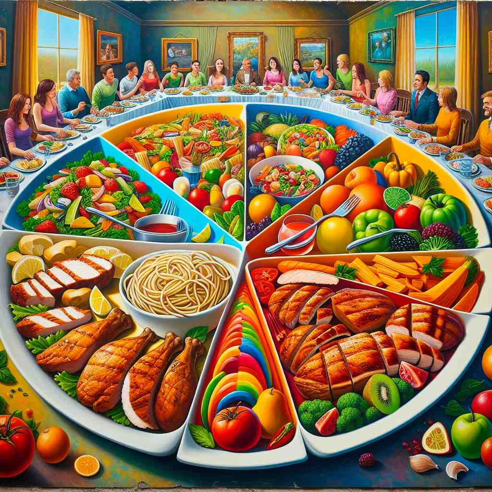
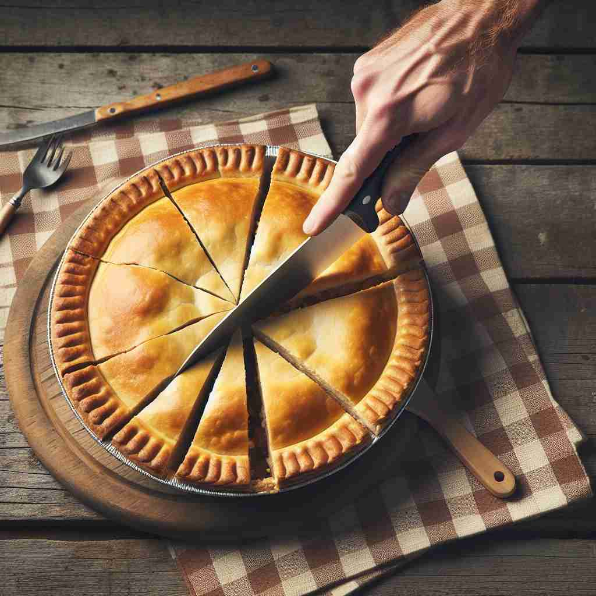

💬 Each person at the table received a portion of food from the large feast.
💬 Each person can choose a portion of pizza from the table.

💬 He took a portion of the pie for dessert.

💬 They enjoyed a portion of food at the picnic.
🔈 ['pɔːʃ(ə)n]
🗝️ n. a part or share of a larger amount or whole
🖼️ 在一个生日派对上，桌子上摆着一个大蛋糕。父母正在把蛋糕分成多个部分，每个人都将得到一块，这展示了'portion'表示较大整体的一部分或份额的含义。
🔍 想象'portion'为一个整体中的一部分。无论是实物的一部分（如食物），还是抽象概念（如命运），都可以看作是从整体中分出的'一份'。这个核心概念贯穿了'portion'的各种用法，帮助你更容易理解和记忆它的多重含义。
💬 Each person at the table received a portion of food from the large feast.
💬 Each person can choose a portion of pizza from the table.
💬 He took a portion of the pie for dessert.
💬 They enjoyed a portion of food at the picnic.
🌳 单词 'portion' 源自拉丁词根 'portio'，意为 '部分，分配'。它没有明显的前缀或后缀，直接表示分配的一部分或份额。
💡 可以联想 'portion' 为 'part' 的一种形式，表示对整体的一个部分。在用餐时 'portion' 常用于描述服务的食物份量，让人容易理解为一份分配好的部分。
🗝️ v. to divide into parts or shares
🖼️ 在一个热闹的厨房中，一位厨师正在准备大餐。他将一大块牛肉切割成同等大小的几部分，以便可以均匀地给每位顾客提供。这体现了'portion'作为动词，指将某物分成部分或份额的用法。
💬 The chef portioned out the ingredients for each dish.
❓ 将整体分成部分的动作
🗝️ n. a serving of food
🖼️ 在一个典雅的餐厅里，侍者端着盘子走向顾客，将一道精致的菜肴放到桌上。顾客微笑着说：“这份量刚刚好！” 这展示了'portion'作为食物的分量或一份的含义。
💬 The restaurant serves generous portions.
❓ 食物中的一部分
🗝️ n. a person's lot, fate, or fortune in life
🖼️ 在一个宁静的公园里，两位年长的朋友坐在长椅上聊天。其中一人说：“有时候，我们必须接受生活给予我们的portion，无论是好还是坏。” 这展示了'portion'指人生中的命运或运气的含义。
💬 It was her portion to suffer much in life.
❓ 人生中分到的"一份"
🗝️ n. a dowry given to a bride
🖼️ 在一个传统的婚礼上，新娘的家人正在向新郎的家人展示准备好的嫁妆，作为女孩的portion。这展示了'portion'作为一种传统婚礼嫁妆的含义。
💬 Her father provided a generous portion for her marriage.
❓ 分给新娘的一份财产